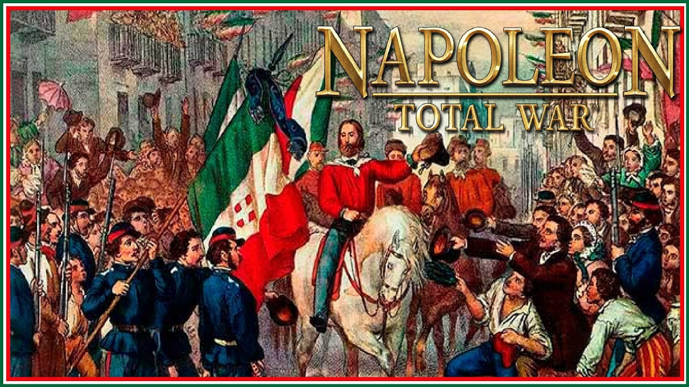

Italia tiene una historia rica y compleja que se remonta a la epoca del Imperio Romano, cuando fue el centro de una de las civilizaciones mas influyentes de la historia. Roma, la capital de Italia, fue el corazon del Imperio Romano, que abarcaba gran parte de Europa, el norte de Africa y partes de Asia. Despues de la caida del Imperio Romano en el siglo V, Italia se fragmento en varios estados independientes y reinos, cada uno con su propia historia y desarrollo cultural.
En la Edad Media, las ciudades-estado italianas, como Venecia, Florencia y Milan, prosperaron gracias al comercio, las artes y la banca. Florencia, en particular, fue el lugar de nacimiento del Renacimiento, un movimiento cultural que transformo el arte, la ciencia y el pensamiento en Europa. Artistas como Leonardo da Vinci, Miguel Angel y Rafael dejaron su huella durante esta epoca.
A lo largo de los siglos, Italia fue invadida por varias potencias extranjeras, incluidas Francia, Espana y Austria. No fue hasta el siglo XIX cuando Italia comenzo el proceso de unificacion bajo la direccion de figuras como Giuseppe Garibaldi, el rey Victor Manuel II y el conde de Cavour. La unificacion de Italia, que se completo en 1871 con la captura de Roma, fue un momento crucial en la historia del pais, que paso a convertirse en una nacion moderna y unificada.
Durante el siglo XX, Italia experimento importantes cambios politicos y sociales. En la Primera Guerra Mundial, Italia lucho junto a las potencias aliadas, y despues enfrento el ascenso del fascismo bajo el liderazgo de Benito Mussolini. Tras la Segunda Guerra Mundial, Italia se convirtio en una republica y ha seguido evolucionando hasta convertirse en una de las principales economias de Europa y un miembro importante de la Union Europea.